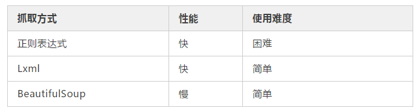
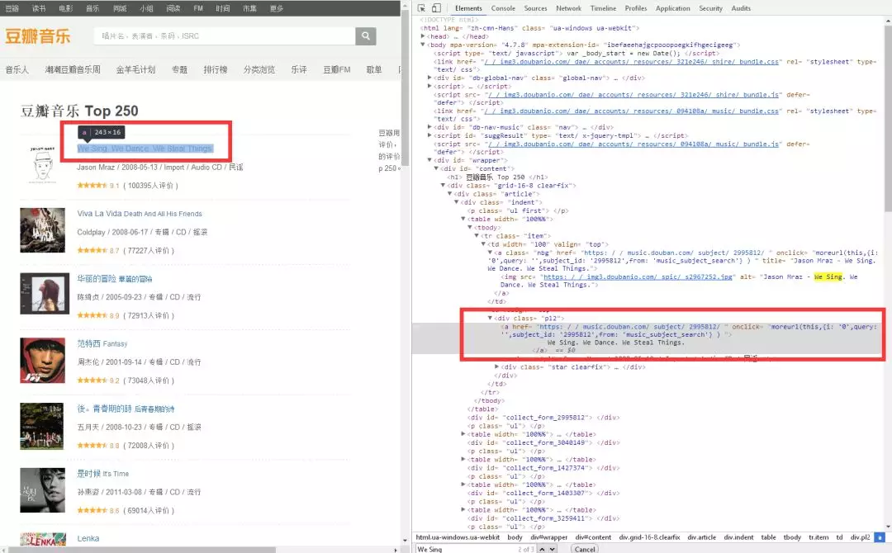

爬虫的抓取方式有好几种，正则表达式，Lxml(xpath)与BeautifulSoup,我在网上查了一下资料，了解到三者之间的使用难度与性能
三种爬虫方式的对比。

这样一比较我我选择了Lxml(xpath)的方式了，虽然有三种方式，但肯定是要选择最好的方式来爬虫，这个道理大家都懂，另外有兴趣的朋友也可以去了解另外两种爬虫方式！
好了现在来讲讲xpath
由于Xpath属于lxml模块，所以首先需要安装lxml库，老办法直接在file-->setting---project interpreter 一键添加lxml库。
from lxml import etree
s=etree.HTML(源码) #将源码转化为能被XPath匹配的格式
s.xpath(xpath表达式) #返回为一列表,
// 双斜杠 定位根节点，会对全文进行扫描，在文档中选取所有符合条件的内容，以列表的形式返回。
/ 单斜杠 寻找当前标签路径的下一层路径标签或者对当前路标签内容进行操作
/text() 获取当前路径下的文本内容
/@xxxx 提取当前路径下标签的属性值
| 可选符 使用|可选取若干个路径 如//p | //div 即在当前路径下选取所有符合条件的p标签和div标签。
. 点 用来选取当前节点
.. 双点 选取当前节点的父节点
学以致用，方能让我们能快速掌握xpath语法功能。
我们这次需要爬取豆瓣音乐前250条
打开豆瓣音乐：https://music.douban.com/top250
打开网址，按下F12，然后查找标题，右键弹出菜单栏 Copy==> Copy Xpath

这里我们想获取音乐标题，音乐标题的xpath是：xpath://*[@id="content"]/div/div[1]/div/table[1]/tbody/tr/td[2]/div/a
# coding:utf-8
from lxml import etree
import requests
url = 'https://music.douban.com/top250'
html = requests.get(url).text #这里一般先打印一下html内容，看看是否有内容再继续。
s = etree.HTML(html)
title = s.xpath('//*[@id="content"]/div/div[1]/div/table[1]/tbody/tr/td[2]/div/a')
print title运行代码：
居然是空的。！！！
这里需要注意一下，浏览器复制的xpath只能作参考，因为浏览器经常会在自己里面增加多余的tbody标签，我们需要手动把这个标签删除
删除中间的/tbody后,是这样的，title = s.xpath('//*[@id="content"]/div/div[1]/div/table[1]/tr/td[2]/div/a')
然后我们再运行代码。
得到：<Element a at 0x53d26c8>
说明标题被获取到了。
因为要获取标题文本，所以xpath表达式要追加/text()title = s.xpath('//*[@id="content"]/div/div[1]/div/table[1]/tr/td[2]/div/a/text()')#因为要获取标题，所以我需要这个当前路径下的文本，所以使用/text()
又因为这个s.xpath返回的是一个集合，且集合中只有一个元素所以我再追加一个[0]
新的表达式：title = s.xpath('//*[@id="content"]/div/div[1]/div/table[1]/tr/td[2]/div/a/text()')[0]#因为要获取标题，所以我需要这个当前路径下的文本，所以使用/text(),再追加[0]
重新运行得到结果：
We Sing. We Dance. We Steal Things.
正是我们想要的标题。
老办法，先用右键copy评分的xpath ://*[@id="content"]/div/div[1]/div/table[1]/tbody/tr/td[2]/div/div/span[2]
复制评价人数的xpath://*[@id="content"]/div/div[1]/div/table[1]/tbody/tr/td[2]/div/div/span[3]/text()
同样的我们要把tbody去掉，然后重新运行代码：
# coding:utf-8
from lxml import etree
import requests
url = 'https://music.douban.com/top250'
html = requests.get(url).text
s = etree.HTML(html)
title = s.xpath('//*[@id="content"]/div/div[1]/div/table[1]/tr/td[2]/div/a/text()')[0]#因为要获取标题，所以我需要这个当前路径下的文本，所以使用/text()
score = s.xpath('//*[@id="content"]/div/div[1]/div/table[1]/tr/td[2]/div/div/span[2]/text()')[0]#因为要获取文本，所以我需要这个当前路径下的文本，所以使用/text()
numbers = s.xpath('//*[@id="content"]/div/div[1]/div/table[1]/tr/td[2]/div/div/span[3]/text()')[0]#因为要获取文本，所以我需要这个当前路径下的文本，所以使用/text()
print title,score,numbers得到：
We Sing. We Dance. We Steal Things.
9.1
(
100395人评价
)
copy标题的xpath，：//*[@id="content"]/div/div[1]/div/table[1]/tbody/tr/td[2]/div/a
想获取音乐连接href这里需要，获取这个标签属于,/@xxx可以提取当前路径标签下的属性值//*[@id="content"]/div/div[1]/div/table[1]/tbody/tr/td[2]/div/a/@href
代码：
# coding:utf-8
from lxml import etree
import requests
url = 'https://music.douban.com/top250'
html = requests.get(url).text
s = etree.HTML(html)
href = s.xpath('//*[@id="content"]/div/div[1]/div/table[1]/tr/td[2]/div/a/@href')[0]#因为要获取标题，所以我需要这个当前路径下的文本，所以使用/text()
title = s.xpath('//*[@id="content"]/div/div[1]/div/table[1]/tr/td[2]/div/a/text()')[0]#因为要获取标题，所以我需要这个当前路径下的文本，所以使用/text()
score = s.xpath('//*[@id="content"]/div/div[1]/div/table[1]/tr/td[2]/div/div/span[2]/text()')[0]#因为要获取文本，所以我需要这个当前路径下的文本，所以使用/text()
numbers = s.xpath('//*[@id="content"]/div/div[1]/div/table[1]/tr/td[2]/div/div/span[3]/text()')[0]#因为要获取文本，所以我需要这个当前路径下的文本，所以使用/text()
print href,title,score,numbers运行代码得到：
https://music.douban.com/subject/2995812/
We Sing. We Dance. We Steal Things.
9.1
(
100395人评价
)
找到图片，复制他的xpath地址：//*[@id="content"]/div/div[1]/div/table[1]/tbody/tr/td[1]/a/img
运行代码：
# coding:utf-8
from lxml import etree
import requests
url = 'https://music.douban.com/top250'
html = requests.get(url).text
s = etree.HTML(html)
href = s.xpath('//*[@id="content"]/div/div[1]/div/table[1]/tr/td[2]/div/a/@href')[0]#因为要获取标题，所以我需要这个当前路径下的文本，所以使用/text()
title = s.xpath('//*[@id="content"]/div/div[1]/div/table[1]/tr/td[2]/div/a/text()')[0]#因为要获取标题，所以我需要这个当前路径下的文本，所以使用/text()
score = s.xpath('//*[@id="content"]/div/div[1]/div/table[1]/tr/td[2]/div/div/span[2]/text()')[0]#因为要获取文本，所以我需要这个当前路径下的文本，所以使用/text()
numbers = s.xpath('//*[@id="content"]/div/div[1]/div/table[1]/tr/td[2]/div/div/span[3]/text()')[0]#因为要获取文本，所以我需要这个当前路径下的文本，所以使用/text()
imgpath = s.xpath('//*[@id="content"]/div/div[1]/div/table[1]/tr/td[1]/a/img/@src')[0]#因为要获取文本，所以我需要这个当前路径下的文本，所以使用/text()
print href,title,score,numbers,imgpath老套路：
得到结果:
https://music.douban.com/subject/2995812/
We Sing. We Dance. We Steal Things.
9.1
(
100395人评价
)
https://img3.doubanio.com/spic/s2967252.jpg
但是这只是获取了一条数据，如果获取多条数据呢？
我们再看第二条数据，第三条数据,第四条数据
得到他们的xpath:
# coding:utf-8
from lxml import etree
import requests
url = 'https://music.douban.com/top250'
html = requests.get(url).text
s = etree.HTML(html)
title = s.xpath('//*[@id="content"]/div/div[1]/div/table[1]/tr/td[2]/div/a/text()')[0]#因为要获取标题，所以我需要这个当前路径下的文本，所以使用/text()
title2 = s.xpath('//*[@id="content"]/div/div[1]/div/table[2]/tr/td[2]/div/a/text()')[0]#因为要获取标题，所以我需要这个当前路径下的文本，所以使用/text()
title3 = s.xpath('//*[@id="content"]/div/div[1]/div/table[3]/tr/td[2]/div/a/text()')[0]#因为要获取标题，所以我需要这个当前路径下的文本，所以使用/text()
title4 = s.xpath('//*[@id="content"]/div/div[1]/div/table[4]/tr/td[2]/div/a/text()')[0]#因为要获取标题，所以我需要这个当前路径下的文本，所以使用/text()
print title,title2,title3,title4得到：
We Sing. We Dance. We Steal Things.
Viva La Vida
华丽的冒险
范特西
对比他们的xpath，发现只有table序号不一样，我们可以就去掉序号，得到通用的xpath信息：
运行代码：
# coding:utf-8
from lxml import etree
import requests
url = 'https://music.douban.com/top250'
html = requests.get(url).text
s = etree.HTML(html)
titles = s.xpath('//*[@id="content"]/div/div[1]/div/table/tr/td[2]/div/a/text()')#因为要获取标题，所以我需要这个当前路径下的文本，所以使用/text()
for title in titles:
print title.strip()得到：
We Sing. We Dance. We Steal Things.
Viva La Vida
华丽的冒险
范特西
後。青春期的詩
是时候
Lenka
Start from Here
旅行的意义
太阳
Once (Soundtrack)
Not Going Anywhere
American Idiot
OK
無與倫比的美麗
亲爱的...我还不知道
城市
O
Wake Me Up When September Ends
叶惠美
七里香
21
My Life Will...
寓言
你在烦恼什么
其它的信息如：链接地址，评分，评价人数都可以用同样的办法来获取，现在我同时获取多条数据，因为每页数据是25条，所以：
完整代码如下：
# coding:utf-8
from lxml import etree
import requests
url = 'https://music.douban.com/top250'
html = requests.get(url).text
s = etree.HTML(html)
hrefs = s.xpath('//*[@id="content"]/div/div[1]/div/table/tr/td[2]/div/a/@href')
titles = s.xpath('//*[@id="content"]/div/div[1]/div/table/tr/td[2]/div/a/text()')
scores = s.xpath('//*[@id="content"]/div/div[1]/div/table/tr/td[2]/div/div/span[2]/text()')
numbers = s.xpath('//*[@id="content"]/div/div[1]/div/table/tr/td[2]/div/div/span[3]/text()')
imgs = s.xpath('//*[@id="content"]/div/div[1]/div/table/tr/td[1]/a/img/@src')
for i in range(25):
print hrefs[i],titles[i],scores[i],numbers[i],imgs[i]得到：
一大批数据了，我就不展示了。有兴趣可以直接copy代码运行.,注意你得装上lxml与requests库.
我们也发现了问题每一个xpath路径特别长，能不能精简一下呢？
hrefs = s.xpath('//*[@id="content"]/div/div[1]/div/table/tr/td[2]/div/a/@href')
titles = s.xpath('//*[@id="content"]/div/div[1]/div/table/tr/td[2]/div/a/text()')
scores = s.xpath('//*[@id="content"]/div/div[1]/div/table/tr/td[2]/div/div/span[2]/text()')
numbers = s.xpath('//*[@id="content"]/div/div[1]/div/table/tr/td[2]/div/div/span[3]/text()')
imgs = s.xpath('//*[@id="content"]/div/div[1]/div/table/tr/td[1]/a/img/@src')观察发现获取几个关键字段的xpath前缀都是 //*[@id="content"]/div/div[1]/div/table/tr 那我能不能把这些东西提出来呢，让后面的不同的自己去追加，另外这样写也不用管每个页面到底有多少条数据，只管查就行了。所以代码做了一下精简。
url = 'https://music.douban.com/top250'
html = requests.get(url).text
s = etree.HTML(html)
trs = s.xpath('//*[@id="content"]/div/div[1]/div/table/tr') #先提取tr之前的节点集合
for tr in trs: #遍历tr
href = tr.xpath('./td[2]/div/a/@href')[0] #注意新节点是tr下的节点
title = tr.xpath('./td[2]/div/a/text()')[0]
score = tr.xpath('./td[2]/div/div/span[2]/text()')[0]
number = tr.xpath('./td[2]/div/div/span[3]/text()')[0]
img = tr.xpath('./td[1]/a/img/@src')[0]
print href,title,score,number,img得到的结果和之前是一样的。
但是，但是，这只是一个页面的数据，我现在想爬取多个页面的数据，怎么办呢？
观察一下翻页路径：
https://music.douban.com/top250?start=0
https://music.douban.com/top250?start=25
https://music.douban.com/top250?start=50
有没有发现页面只是后面start参数发生了改变，且增长为每次25，并且250条数据正好是10页。
所以我可以遍历这个页面。
代码：
for i in range(10):
url = 'https://music.douban.com/top250?start={}'.format(i*25)
print url
得到：
https://music.douban.com/top250?start=0
https://music.douban.com/top250?start=25
https://music.douban.com/top250?start=50
https://music.douban.com/top250?start=75
https://music.douban.com/top250?start=100
https://music.douban.com/top250?start=125
https://music.douban.com/top250?start=150
https://music.douban.com/top250?start=175
https://music.douban.com/top250?start=200
https://music.douban.com/top250?start=225
正是自己要的结果。
好了最后我们把代码拼装在一起，并注意每个方法的用途。
# coding:utf-8
from lxml import etree
import requests
#获取页面地址
def getUrl():
for i in range(10):
url = 'https://music.douban.com/top250?start={}'.format(i*25)
scrapyPage(url)
#爬取每页数据
def scrapyPage(url):
html = requests.get(url).text
s = etree.HTML(html)
trs = s.xpath('//*[@id="content"]/div/div[1]/div/table/tr')
for tr in trs:
href = tr.xpath('./td[2]/div/a/@href')[0]
title = tr.xpath('./td[2]/div/a/text()')[0]
score = tr.xpath('./td[2]/div/div/span[2]/text()')[0]
number = tr.xpath('./td[2]/div/div/span[3]/text()')[0]
img = tr.xpath('./td[1]/a/img/@src')[0]
print href, title, score, number, img
if '__main__':
getUrl()